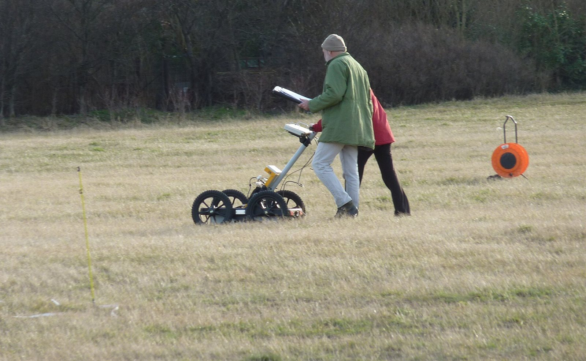

Preguntas frecuentes
Lo que más nos preguntan, respondido por la especialista
Si tu duda no está aquí, escríbenos por WhatsApp o desde el formulario y te respondemos con gusto.
Costos y tiempos
¿Cuánto cuesta un estudio geofísico?
Siempre depende del objetivo geológico al que se quiere llegar, del área de estudio y su ubicación, del acceso al sitio, del espacio disponible para realizar las mediciones, de las condiciones del sitio y del presupuesto del cliente. Envíanos los datos de tu proyecto y te preparamos una cotización.
¿Cuánto tarda?
El trabajo de campo de un estudio geofísico común toma por lo general de 1 a 3 días, aunque depende del área de estudio.
¿Trabajan fuera de mi ciudad?
Sí, nos trasladamos a donde esté tu proyecto. Los viáticos se incluyen de forma transparente en la cotización.
Elegir el estudio
No sé qué estudio necesito, ¿me pueden orientar?
Por supuesto. Cuéntanos el objetivo de tu estudio y la razón por la que lo requieres (la profundidad a la que quieres llegar, la problemática que tienes, etc.) y te recomendamos el método o la solución más eficiente.
¿Los estudios geofísicos reemplazan a los sondeos?
No. La geofísica es un método indirecto que sirve como aproximación o vista general de las posibles condiciones del subsuelo, mientras que los sondeos o barrenaciones son pruebas directas del subsuelo.
¿Qué información necesitan para cotizar?
La ubicación del sitio (municipio y, si es posible, coordenadas o croquis), qué se va a construir o decidir, la profundidad que te interesa y las dimensiones aproximadas del terreno. Con eso proponemos el método y la cantidad de líneas o puntos.
Entregables
¿Qué incluye el informe?
Objetivo, metodología, georreferenciación del estudio o de los puntos de adquisición, modelos geofísicos, posible caracterización geológica, conclusiones, recomendaciones y evidencia fotográfica.
¿Entregan los datos de campo?
Sí. Junto con el informe en PDF entregamos los datos crudos y procesados, para que cualquier colega pueda revisarlos o reutilizarlos en el futuro.